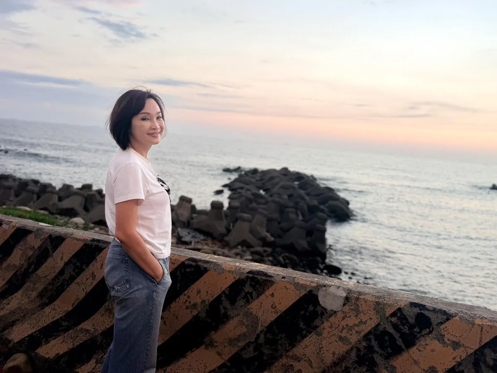

高雄的未來不會只有市區的繁華，也會有海線的光彩，我們一起努力，讓薪水漲上去、把人留下來、高雄拚世界！ 今晚來到 #彌陀 彌壽宮廟口開講，談到彌陀，是虱目魚的故鄉，也是高雄海線一顆閃亮的珍珠。 下午到海尾橋走走，看著夕陽慢慢落下，真的很美。我一路在想，這麼好的地方，為什麼還有那麼多問題，幾十年來始終沒有真正解決？淹水、交通、觀光發展，鄉親及議員也爭取了很多年，卻還是緩步向前。 我看到的彌陀，有很多認真打拚的人。有堅守漁業的鄉親，用雙手養活一家人；有返鄉的年輕人，自己畫地圖、找景點、推美食，希望讓更多人認識自己的故鄉，這些努力，不該只是靠鄉親自己苦撐。 這些年，高雄市區和縣區的資源分配，大家心裡感到不公平。市區有演唱會、有大型建設，縣區也該被看見；彌陀的孩子也該與市區孩子機會相同、有競爭力。 未來有機會承擔市政，我一定努力讓市區與縣區的發展更均衡，讓每一個角落都被公平對待。 我認為，高雄最重要的，就是薪水漲上去、把人留下來，高雄才能拚全世界！高雄給民進黨40年的時間已經夠多，未來4年，應該換人試試看，給我一個機會，照顧好大家。 今晚也要特別感謝長年深耕大岡山的 陸淑美 議員，如今將交棒給 黃韻涵，還有持續為海線發聲的 宋立彬 高雄市議員 方信淵-高雄市議員，以及所有認真服務的里長們。 基層有里長打拚，議會有議員監督，市政交給我。我會用媽媽照顧孩子的心情來照顧大家，讓更多人看見這片土地的美，也讓下一代以家鄉為榮。